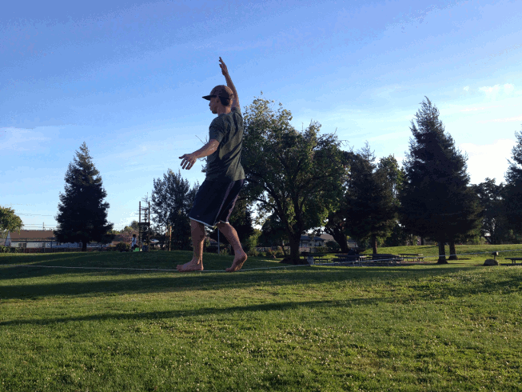
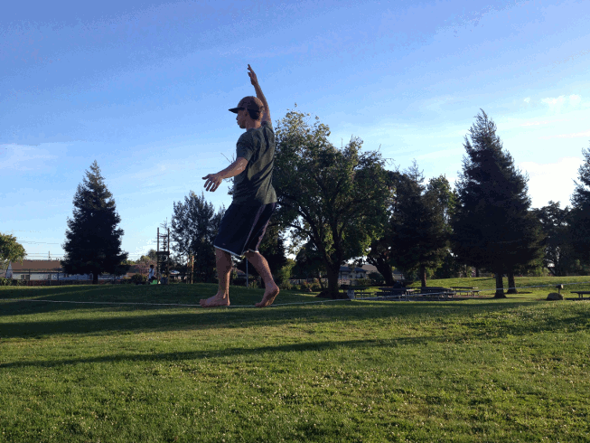

Rock Climbing
I really enjoy rock climbing. Here's a route log.
- San Diego
- Santee Boulders
- Various Routes
- El Cajon
- Leonids (5.9, 350ft, GREAT FUN)
- Buffalo Brothers (5.8, 90ft)
- Manana (5.10, 180ft, follower)
- Crystalean (5.11, 180ft, follower)
- Joshua Tree
- Indian Cove, Various Routes
- Toe Jam (5.7, 70ft)
- Various Boulders (scrambling madness)
- Tahquitz Rock
- Yosemite
- Manure Pile - After Six (5.6, 350ft, first climb!)
- Higher Cathedral - Braille Book (5.8, 650ft)
- Five Open Books - Commitment (5.9, 250ft)
- Half Dome - Snake Dike (5.7, 1000ft, long day)
- Middle Cathedral - East Buttress (5.9, 1100ft)
- San Luis Obispo
- P-Crack (5.8, 100ft)
- Tecate Challenge (5.8, 400ft)
- Diving Board (5.12 A1, 100ft)
- Bay Area
- Stinson Beach - Various Boulders
- Pinnacles National Monument
- Lava Falls (5.9, 200ft)
- Machete Direct (5.8 A1, 450ft)
- Mount Saint Helena (north of Calistoga)
- The Far Side Routes (5.8, 5.9, 5.9, 5.10)
- Castle Rock (Santa Cruz Mountains)
- Vulture Peak Route (5.8, 100ft)
- Route Left of Goat Rock Direct (5.9, 90ft)
|
(Victory atop the Half Dome.)
(Toprope setup, Castle Rock State Park.)
|
 

{kind=link}